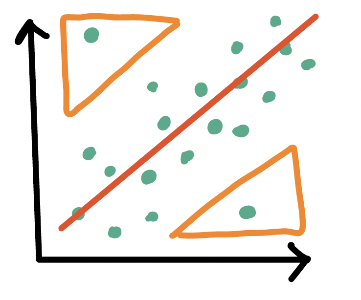
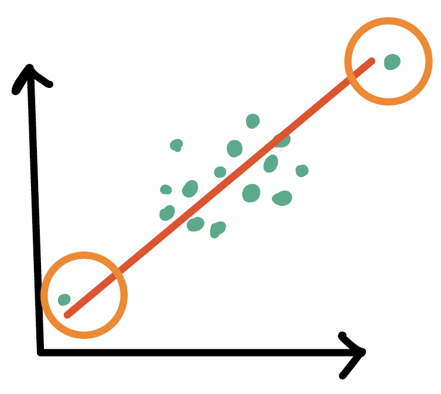
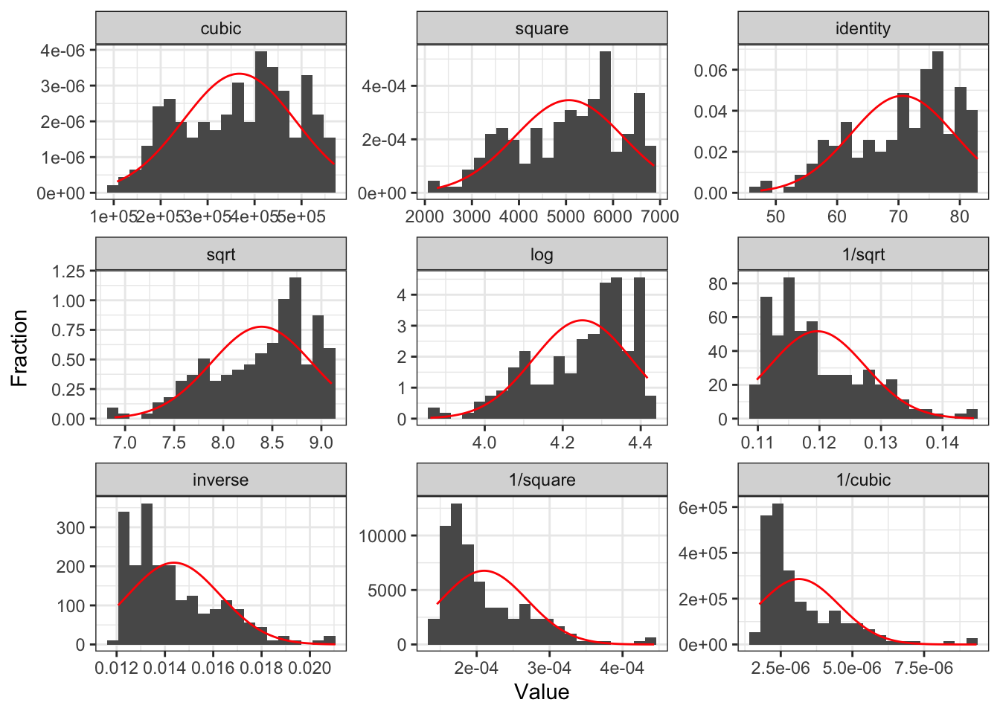
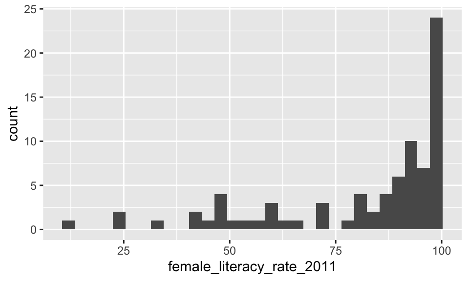
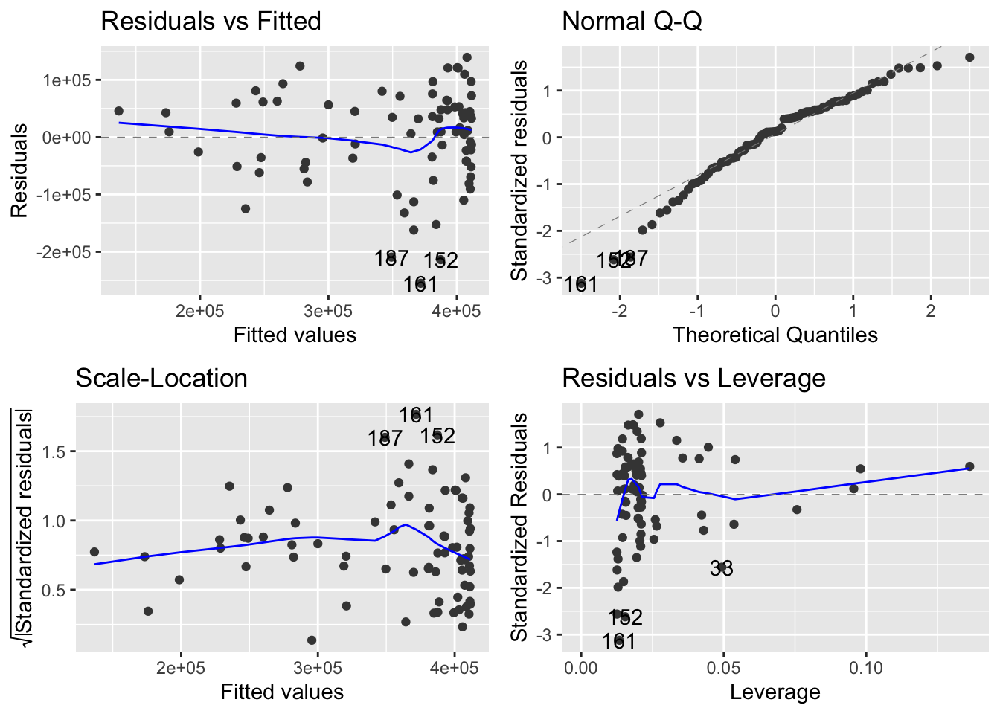
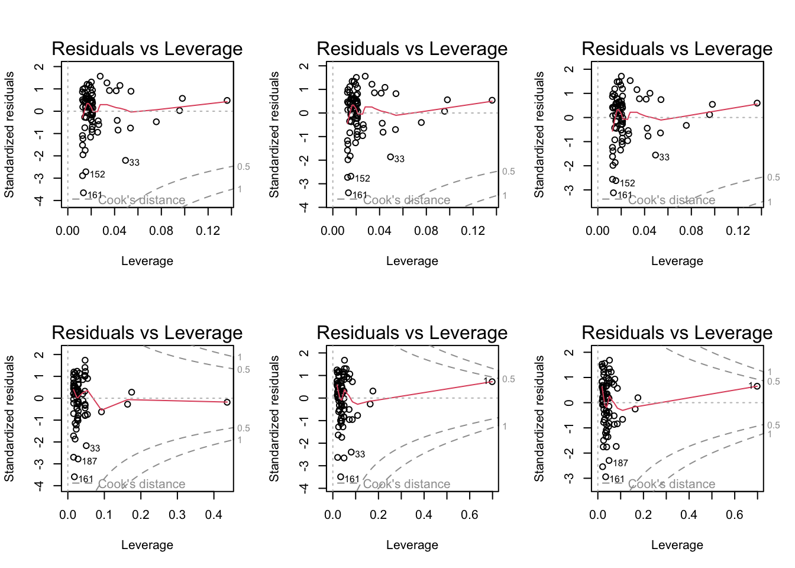

| term | estimate | std.error | statistic | p.value |
|---|---|---|---|---|
| (Intercept) | 50.93 | 2.66 | 19.14 | 0.00 |
| female_literacy_rate_2011 | 0.23 | 0.03 | 7.38 | 0.00 |
SLR: Model Evaluation and Diagnostics
Nicky Wakim
2023-01-31
Learning Objectives
Use visualizations and cut off points to flag potentially influential points using residuals, leverage, and Cook’s distance
Handle influential points and assumption violations by checking data errors, reassessing the model, and making data transformations.
Implement a model with data transformations and determine if it improves the model fit.
Let’s remind ourselves of the model that we have been working with
We have been looking at the association between life expectancy and female literacy rate
We used OLS to find the coefficient estimates of our best-fit line
\[Y = \beta_0 + \beta_1 X + \epsilon\]

Our residuals will help us a lot in our diagnostics!
The residuals \(\widehat\epsilon_i\) are the vertical distances between
- the observed data \((X_i, Y_i)\)
- the fitted values (regression line) \(\widehat{Y}_i = \widehat\beta_0 + \widehat\beta_1 X_i\)
\[ \widehat\epsilon_i =Y_i - \widehat{Y}_i \text{, for } i=1, 2, ..., n \]

augment(): getting extra information on the fitted model
Run
model1throughaugment()(model1is input)- So we assigned
model1as the output of thelm()function (model1is output)
- So we assigned
Will give us values about each observation in the context of the fitted regression model
- cook’s distance (
.cooksd), fitted value (.fitted, \(\widehat{Y}_i\)), leverage (.hat), residual (.resid), standardized residuals (.std.resid)
- cook’s distance (
Rows: 80
Columns: 9
$ .rownames <chr> "1", "2", "5", "6", "7", "8", "14", "22", "…
$ life_expectancy_years_2011 <dbl> 56.7, 76.7, 60.9, 76.9, 76.0, 73.8, 71.0, 7…
$ female_literacy_rate_2011 <dbl> 13.0, 95.7, 58.6, 99.4, 97.9, 99.5, 53.4, 9…
$ .fitted <dbl> 53.94643, 73.14897, 64.53453, 74.00809, 73.…
$ .resid <dbl> 2.7535654, 3.5510294, -3.6345319, 2.8919074…
$ .hat <dbl> 0.13628996, 0.01768176, 0.02645854, 0.02077…
$ .sigma <dbl> 6.172684, 6.168414, 6.167643, 6.172935, 6.1…
$ .cooksd <dbl> 1.835891e-02, 3.062372e-03, 4.887448e-03, 2…
$ .std.resid <dbl> 0.48238134, 0.58332052, -0.59972251, 0.4757…Revisiting our LINE assumptions
[L] Linearity of relationship between variables
Check if there is a linear relationship between the mean response (Y) and the explanatory variable (X)
[I] Independence of the \(Y\) values
Check that the observations are independent
[N] Normality of the \(Y\)’s given \(X\) (residuals)
Check that the responses (at each level X) are normally distributed
- Usually measured through the residuals
[E] Equality of variance of the residuals (homoscedasticity)
Check that the variance (or standard deviation) of the responses is equal for all levels of X
- Usually measured through the residuals
Learning Objectives
- Use visualizations and cut off points to flag potentially influential points using residuals, leverage, and Cook’s distance
Handle influential points and assumption violations by checking data errors, reassessing the model, and making data transformations.
Implement a model with data transformations and determine if it improves the model fit.
Influential points
Outliers
- An observation (\(X_i, Y_i\)) whose response \(Y_i\) does not follow the general trend of the rest of the data

High leverage observations
- An observation (\(X_i, Y_i\)) whose predictor \(X_i\) has an extreme value
- \(X_i\) can be an extremely high or low value compared to the rest of the observations

Outliers
An observation (\(X_i, Y_i\)) whose response \(Y_i\) does not follow the general trend of the rest of the data
How do we determine if a point is an outlier?
- Scatterplot of \(Y\) vs. \(X\)
- Followed by evaluation of its residual (and standardized residual)
- Use the internally standardized residual (aka studentized residual) to determine if an observation is an outlier
Poll Everywhere Question 1
Identifying outliers
Internally standardized residual
\[ r_i = \frac{\widehat\epsilon_i}{\sqrt{\widehat\sigma^2(1-h_{ii})}} \]
We flag an observation if the standardized residual is “large”
Different sources will define “large” differently
PennState site uses \(|r_i| > 3\)
autoplot()shows the 3 observations with the highest standardized residualsOther sources use \(|r_i| > 2\), which is a little more conservative

Countries that are outliers (\(|r_i| > 2\))
- We can identify the countries that are outliers
# A tibble: 4 × 10
.rownames country life_expectancy_year…¹ female_literacy_rate…² .std.resid
<chr> <chr> <dbl> <dbl> <dbl>
1 33 Central Af… 48 44.2 -2.20
2 152 South Afri… 55.8 92.2 -2.71
3 161 Swaziland 48.9 87.3 -3.65
4 187 Zimbabwe 51.9 80.1 -2.89
# ℹ abbreviated names: ¹life_expectancy_years_2011, ²female_literacy_rate_2011
# ℹ 5 more variables: .fitted <dbl>, .resid <dbl>, .hat <dbl>, .sigma <dbl>,
# .cooksd <dbl>High leverage observations
- An observation (\(X_i, Y_i\)) whose response \(X_i\) is considered “extreme” compared to the other values of \(X\)
How do we determine if a point has high leverage?
- Scatterplot of \(Y\) vs. \(X\)
- Calculating the leverage of each observation
Leverage \(h_i\)
- Values of leverage are: \(0 \leq h_i \leq 1\)
- We flag an observation if the leverage is “high”
Different sources will define “high” differently
Some textbooks use \(h_i > 4/n\) where \(n\) = sample size
Some people suggest \(h_i > 6/n\)
PennState site uses \(h_i > 3p/n\) where \(p\) = number of regression coefficients
# A tibble: 80 × 10
.rownames country life_expectancy_year…¹ female_literacy_rate…² .hat
<chr> <chr> <dbl> <dbl> <dbl>
1 1 Afghanistan 56.7 13 0.136
2 104 Mali 60 24.6 0.0980
3 34 Chad 57 25.4 0.0956
4 146 Sierra Leone 55.7 32.6 0.0757
5 62 Gambia 66 41.9 0.0540
6 70 Guinea-Bissau 56.2 42.1 0.0536
7 33 Central Afric… 48 44.2 0.0493
8 118 Nepal 68.7 46.7 0.0446
9 42 Cote d'Ivoire 56.9 47.6 0.0430
10 169 Togo 59.6 48 0.0422
# ℹ 70 more rows
# ℹ abbreviated names: ¹life_expectancy_years_2011, ²female_literacy_rate_2011
# ℹ 5 more variables: .std.resid <dbl>, .fitted <dbl>, .resid <dbl>,
# .sigma <dbl>, .cooksd <dbl>Countries with high leverage (\(h_i > 4/n\))
- We can look at the countries that have high leverage
# A tibble: 6 × 10
.rownames country life_expectancy_years_…¹ female_literacy_rate…² .hat
<chr> <chr> <dbl> <dbl> <dbl>
1 1 Afghanistan 56.7 13 0.136
2 104 Mali 60 24.6 0.0980
3 34 Chad 57 25.4 0.0956
4 146 Sierra Leone 55.7 32.6 0.0757
5 62 Gambia 66 41.9 0.0540
6 70 Guinea-Bissau 56.2 42.1 0.0536
# ℹ abbreviated names: ¹life_expectancy_years_2011, ²female_literacy_rate_2011
# ℹ 5 more variables: .std.resid <dbl>, .fitted <dbl>, .resid <dbl>,
# .sigma <dbl>, .cooksd <dbl>Poll Everywhere Question 2
Countries with high leverage (\(h_i > 4/n\))
Label only countries with large leverage:
ggplot(aug1, aes(x = female_literacy_rate_2011, y = life_expectancy_years_2011,
label = country)) +
geom_point() +
geom_smooth(method = "lm", color = "darkgreen") +
geom_text(aes(label = ifelse(.hat > 0.05, as.character(country), ''))) +
geom_vline(xintercept = mean(aug1$female_literacy_rate_2011), color = "grey") +
geom_hline(yintercept = mean(aug1$life_expectancy_years_2011), color = "grey")
What does the model look like without the high leverage points?
Sensitivity analysis removing countries with high leverage
model1_lowlev <- lm(life_expectancy_years_2011 ~ female_literacy_rate_2011,
data = aug1_lowlev)
tidy(model1_lowlev) %>% gt() %>% # Without high-leverage points
tab_options(table.font.size = 40) %>%
fmt_number(decimals = 3)| term | estimate | std.error | statistic | p.value |
|---|---|---|---|---|
| (Intercept) | 49.563 | 3.888 | 12.746 | 0.000 |
| female_literacy_rate_2011 | 0.247 | 0.044 | 5.562 | 0.000 |
tidy(model1) %>% gt() %>% # With high leverage points
tab_options(table.font.size = 40) %>%
fmt_number(decimals = 3)| term | estimate | std.error | statistic | p.value |
|---|---|---|---|---|
| (Intercept) | 50.928 | 2.660 | 19.143 | 0.000 |
| female_literacy_rate_2011 | 0.232 | 0.031 | 7.377 | 0.000 |
Cook’s distance
- Measures the overall influence of an observation
Attempts to measure how much influence a single observation has over the fitted model
Measures how all fitted values change when the \(ith\) observation is removed from the model
Combines leverage and outlier information
Identifying points with high Cook’s distance
The Cook’s distance for the \(i^{th}\) observation is
\[d_i = \frac{h_i}{2(1-h_i)} \cdot r_i^2\] where \(h_i\) is the leverage and \(r_i\) is the studentized residual
- Another rule for Cook’s distance that is not strict:
- Investigate observations that have \(d_i > 1\)
- Cook’s distance values are already in the augment tibble:
.cooksd
aug1 = aug1 %>% relocate(.cooksd, .after = female_literacy_rate_2011)
aug1 %>% arrange(desc(.cooksd))# A tibble: 80 × 10
.rownames country life_expectancy_year…¹ female_literacy_rate…² .cooksd
<chr> <chr> <dbl> <dbl> <dbl>
1 33 Central Afri… 48 44.2 0.126
2 161 Swaziland 48.9 87.3 0.0903
3 152 South Africa 55.8 92.2 0.0577
4 187 Zimbabwe 51.9 80.1 0.0531
5 114 Morocco 73.8 57.6 0.0350
6 118 Nepal 68.7 46.7 0.0311
7 14 Bangladesh 71 53.4 0.0280
8 23 Botswana 58.9 85.6 0.0249
9 54 Equatorial G… 61.4 91.1 0.0231
10 62 Gambia 66 41.9 0.0228
# ℹ 70 more rows
# ℹ abbreviated names: ¹life_expectancy_years_2011, ²female_literacy_rate_2011
# ℹ 5 more variables: .hat <dbl>, .std.resid <dbl>, .fitted <dbl>,
# .resid <dbl>, .sigma <dbl>Plotting Cook’s Distance

Model without those 4 points: QQ Plot, Residual plot
model1_lowcd <- lm(life_expectancy_years_2011 ~ female_literacy_rate_2011,
data = aug1_lowcd)
tidy(model1_lowcd) %>% gt() %>% # Without high-leverage points
tab_options(table.font.size = 40) %>%
fmt_number(decimals = 3)| term | estimate | std.error | statistic | p.value |
|---|---|---|---|---|
| (Intercept) | 52.388 | 2.078 | 25.208 | 0.000 |
| female_literacy_rate_2011 | 0.226 | 0.024 | 9.208 | 0.000 |
tidy(model1) %>% gt() %>% # With high leverage points
tab_options(table.font.size = 40) %>%
fmt_number(decimals = 3)| term | estimate | std.error | statistic | p.value |
|---|---|---|---|---|
| (Intercept) | 50.928 | 2.660 | 19.143 | 0.000 |
| female_literacy_rate_2011 | 0.232 | 0.031 | 7.377 | 0.000 |
Model without those 4 points: QQ Plot, Residual plot


I am okay with this!
And don’t forget: we may want more variables in our model!
You do not need to produce plots with the influential points taken out
Summary of how we identify influential points
Use scatterplot of \(Y\) vs. \(X\) to see if any points fall outside of range we expect
Use standardized residuals, leverage, and Cook’s distance to further identify those points
Look at the models run with and without the identified points to check for drastic changes
Look at QQ plot and residuals to see if assumptions hold without those points
Look at coefficient estimates to see if they change in sign and large magnitude
- Next: how to handle? It’s a little wishy washy
Learning Objectives
- Use visualizations and cut off points to flag potentially influential points using residuals, leverage, and Cook’s distance
- Handle influential points and assumption violations by checking data errors, reassessing the model, and making data transformations.
- Implement a model with data transformations and determine if it improves the model fit.
How do we deal with influential points?
It’s always weird to be using numbers to help you diagnose an issue, but the issue kinda gets unresolved
If an observation is influential, we can check data errors:
Was there a data entry or collection problem?
If you have reason to believe that the observation does not hold within the population (or gives you cause to redefine your population)
If an observation is influential, we can check our model:
Did you leave out any important predictors?
Should you consider adding some interaction terms?
Is there any nonlinearity that needs to be modeled?
Basically, deleting an observation should be justified outside of the numbers!
- If it’s an honest data point, then it’s giving us important information!
When we have detected problems in our model…
- We have talked about influential points
- We have talked about identifying issues with our LINE assumptions
What are our options once we have identified issues in our linear regression model?
See if we need to add predictors to our model
- Nicky’s thought for our life expectancy example
Try a transformation if there is an issue with linearity or normality
Try a transformation if there is unequal variance
Try a weighted least squares approach if unequal variance (might be lesson at end of course)
Try a robust estimation procedure if we have a lot of outlier issues (outside scope of class)
Learning Objectives
Use visualizations and cut off points to flag potentially influential points using residuals, leverage, and Cook’s distance
Handle influential points and assumption violations by checking data errors, reassessing the model, and making data transformations.
- Implement a model with data transformations and determine if it improves the model fit.
Transformations
When we have issues with our LINE (mostly linearity, normality, or equality of variance) assumptions
- We can use transformations to improve the fit of the model
Transformations can…
Make the relationship more linear
Make the residuals more normal
“Stabilize” the variance so that it is more constant
It can also bring in or reduce outliers
We can transform the dependent (\(Y\)) variable of the independent (\(X\)) variable
- Usually we want to try transforming the \(X\) first
- Requires trial and error!!
- Major drawback: interpreting the model becomes harder!
Common transformations
Tukey’s transformation (power) ladder
- Use
R’sgladder()command from thedescribedatapackage
- Use
| Power p | -3 | -2 | -1 | -1/2 | 0 | 1/2 | 1 | 2 | 3 |
|---|---|---|---|---|---|---|---|---|---|
| \(\frac{1}{x^3}\) | \(\frac{1}{x^2}\) | \(\frac{1}{x}\) | \(\frac{1}{\sqrt{x}}\) | \(\log(x)\) | \(\sqrt{x}\) | \(x\) | \(x^2\) | \(x^3\) |
How to use the power ladder for the general distribution shape
If data are skewed left, we need to compress smaller values towards the rest of the data
- Go “up” ladder to transformations with power > 1
If data are skewed right, we need to compress larger values towards the rest of the data
- Go “down” ladder to transformations with power < 1
How to use the power ladder for heteroscedasticity
If higher \(X\) values have more spread
Compress larger values towards the rest of the data
Go “down” ladder to transformations with power < 1
If lower \(X\) values have more spread
Compress smaller values towards the rest of the data
Go “up” ladder to transformations with power > 1
Poll Everywhere Question 3
Transform dependent variable?

gladder() of life expectancy
Transform independent variable?
gladder() of female literacy rate

Tips
Recall, assessing our LINE assumptions are not on \(Y\) alone!!
- We can use
gladder()to get a sense of what our transformations will do to the data, but we need to check with our residuals again!!
- We can use
Transformations usually work better if all values are positive (or negative)
If observation has a 0, then we cannot perform certain transformations
Log function only defined for positive values
- We might take the \(log(X+1)\) if \(X\) includes a 0 value
When we make cubic or sqaure transformations, we MUST include the original \(X\)
- We do not do this for \(Y\) though
Add quadratic and cubic transformations to dataset
- Helpful to make a new variable with the transformation in your dataset
gapm <- gapm %>%
mutate(LE_2 = life_expectancy_years_2011^2,
LE_3 = life_expectancy_years_2011^3,
FLR_2 = female_literacy_rate_2011^2,
FLR_3 = female_literacy_rate_2011^3)
glimpse(gapm)Rows: 188
Columns: 8
$ country <chr> "Afghanistan", "Albania", "Algeria", "Andor…
$ life_expectancy_years_2011 <dbl> 56.7, 76.7, 76.7, 82.6, 60.9, 76.9, 76.0, 7…
$ female_literacy_rate_2011 <dbl> 13.0, 95.7, NA, NA, 58.6, 99.4, 97.9, 99.5,…
$ .rownames <chr> "1", "2", "3", "4", "5", "6", "7", "8", "9"…
$ LE_2 <dbl> 3214.89, 5882.89, 5882.89, 6822.76, 3708.81…
$ LE_3 <dbl> 182284.3, 451217.7, 451217.7, 563560.0, 225…
$ FLR_2 <dbl> 169.00, 9158.49, NA, NA, 3433.96, 9880.36, …
$ FLR_3 <dbl> 2197.0, 876467.5, NA, NA, 201230.1, 982107.…We are going to compare a few different models with transformations
We are going to call life expectancy \(LE\) and female literacy rate \(FLR\)
- Model 1: \(LE = \beta_0 + \beta_1 FLR + \epsilon\)
- Model 2: \(LE^2 = \beta_0 + \beta_1 FLR + \epsilon\)
- Model 3: \(LE^3 = \beta_0 + \beta_1 FLR + \epsilon\)
- Model 4: \(LE = \beta_0 + \beta_1 FLR + \beta_2 FLR^2 +\epsilon\)
- Model 5: \(LE = \beta_0 + \beta_1 FLR + \beta_2 FLR^2 +\beta_3 FLR^3 +\epsilon\)
- Model 6: \(LE^3 = \beta_0 + \beta_1 FLR + \beta_2 FLR^2 +\beta_3 FLR^3 +\epsilon\)
Poll Everywhere Question 4
Compare Scatterplots: does linearity improve?
Run models with transformations: examples
Model 2: \(LE^2 = \beta_0 + \beta_1 FLR + \epsilon\)
| term | estimate | std.error | statistic | p.value |
|---|---|---|---|---|
| (Intercept) | 2,401.272 | 352.070 | 6.820 | 0.000 |
| female_literacy_rate_2011 | 31.174 | 4.166 | 7.484 | 0.000 |
Model 6: \(LE^3 = \beta_0 + \beta_1 FLR + \beta_2 FLR^2 +\beta_3 FLR^3 +\epsilon\)
| term | estimate | std.error | statistic | p.value |
|---|---|---|---|---|
| (Intercept) | 67,691.796 | 149,056.945 | 0.454 | 0.651 |
| female_literacy_rate_2011 | 8,092.133 | 8,473.154 | 0.955 | 0.343 |
| FLR_2 | −128.596 | 147.876 | −0.870 | 0.387 |
| FLR_3 | 0.840 | 0.794 | 1.059 | 0.293 |
Normal Q-Q plots comparison
Residual plots comparison

Summary of transformations
If the model without the transformation is blatantly violating a LINE assumption
- Then a transformation is a good idea
If the model without a transformation is not following the LINE assumptions very well, but is mostly okay
- Then try to avoid a transformation
- Think about what predictors might need to be added
- Especially if you keep seeing the same points as influential
If interpretability is important in your final work, then transformations are not a great solution
Reference: all run models
Model 2: \(LE^2 = \beta_0 + \beta_1 FLR + \epsilon\)
| term | estimate | std.error | statistic | p.value |
|---|---|---|---|---|
| (Intercept) | 2401.27207 | 352.069818 | 6.820443 | 1.726640e-09 |
| female_literacy_rate_2011 | 31.17351 | 4.165624 | 7.483514 | 9.352191e-11 |
Model 3: \(LE^3 \sim FLR\)
| term | estimate | std.error | statistic | p.value |
|---|---|---|---|---|
| (Intercept) | 95453.189 | 35631.6898 | 2.678885 | 9.005716e-03 |
| female_literacy_rate_2011 | 3166.481 | 421.5875 | 7.510853 | 8.285324e-11 |
Model 4: \(LE \sim FLR + FLR^2\)
model4 <- lm(life_expectancy_years_2011 ~
female_literacy_rate_2011 + FLR_2,
data = gapm)
tidy(model4) %>% gt()| term | estimate | std.error | statistic | p.value |
|---|---|---|---|---|
| (Intercept) | 57.030875456 | 6.282845592 | 9.07723652 | 8.512585e-14 |
| female_literacy_rate_2011 | 0.019348795 | 0.201021963 | 0.09625215 | 9.235704e-01 |
| FLR_2 | 0.001578649 | 0.001472592 | 1.07202008 | 2.870595e-01 |
Model 5: \(LE \sim FLR + FLR^2 + FLR^3\)
model5 <- lm(life_expectancy_years_2011 ~
female_literacy_rate_2011 + FLR_2 + FLR_3,
data = gapm)
tidy(model5) %>% gt()| term | estimate | std.error | statistic | p.value |
|---|---|---|---|---|
| (Intercept) | 4.732796e+01 | 1.117939e+01 | 4.2335001 | 6.373341e-05 |
| female_literacy_rate_2011 | 6.517986e-01 | 6.354934e-01 | 1.0256576 | 3.083065e-01 |
| FLR_2 | -9.952763e-03 | 1.109080e-02 | -0.8973895 | 3.723451e-01 |
| FLR_3 | 6.245016e-05 | 5.953283e-05 | 1.0490038 | 2.975008e-01 |
Model 6: \(LE^3 \sim FLR + FLR^2 + FLR^3\)
| term | estimate | std.error | statistic | p.value |
|---|---|---|---|---|
| (Intercept) | 67691.7963283 | 1.490569e+05 | 0.4541338 | 0.6510268 |
| female_literacy_rate_2011 | 8092.1325988 | 8.473154e+03 | 0.9550320 | 0.3425895 |
| FLR_2 | -128.5960879 | 1.478757e+02 | -0.8696230 | 0.3872447 |
| FLR_3 | 0.8404736 | 7.937625e-01 | 1.0588477 | 0.2930229 |
SLR 5